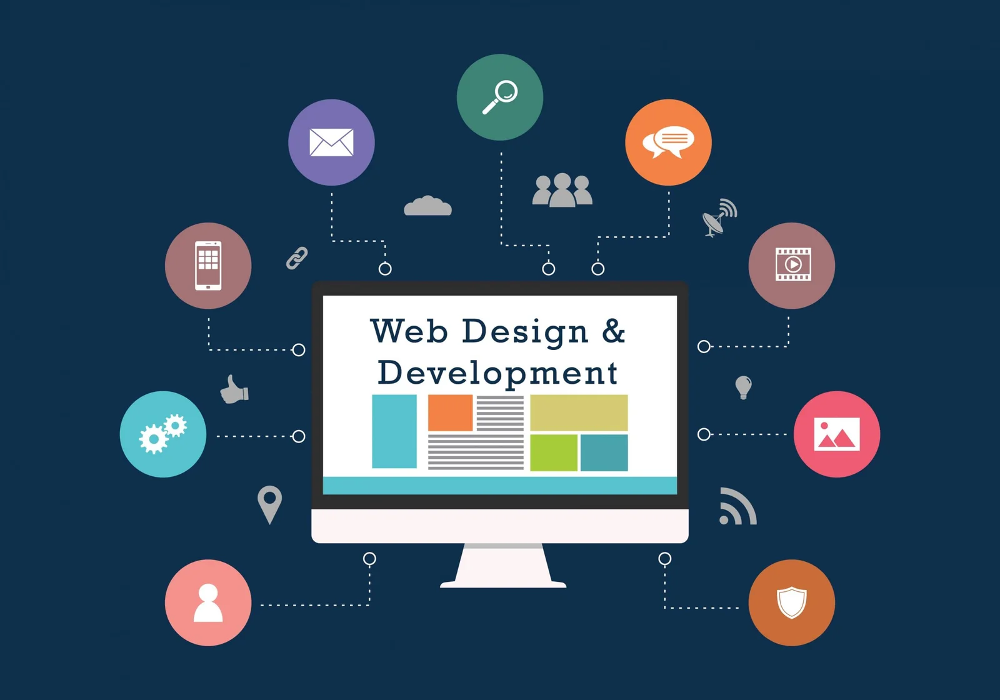

My Journey into Web Development

Welcome to my blog! In this post, I'll share my experience and insights about diving into the world of web development. From the moment I first encountered HTML and CSS, I was fascinated by the potential to create interactive and visually appealing websites.
As I delved deeper into JavaScript and other web technologies, I realized the endless possibilities that web development offers for creativity and problem-solving. Through continuous learning and practice, I have honed my skills and developed a passion for building user-friendly and responsive web applications.